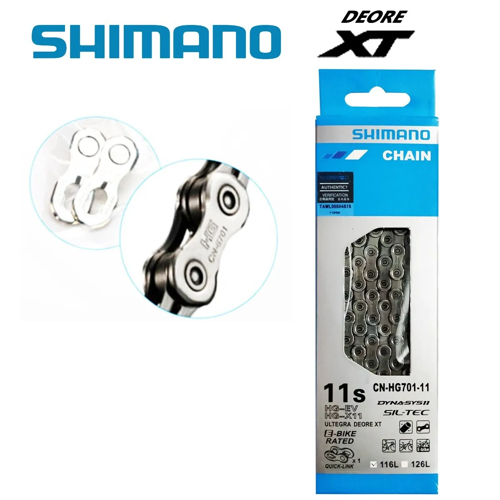

A bicycle chain is a roller chain that transfers power from the pedals to the drive-wheel of a bicycle, thus propelling it. Most bicycle chains are made from plain carbon or alloy steel, but some are nickel-plated to prevent rust, or simply for aesthetics.